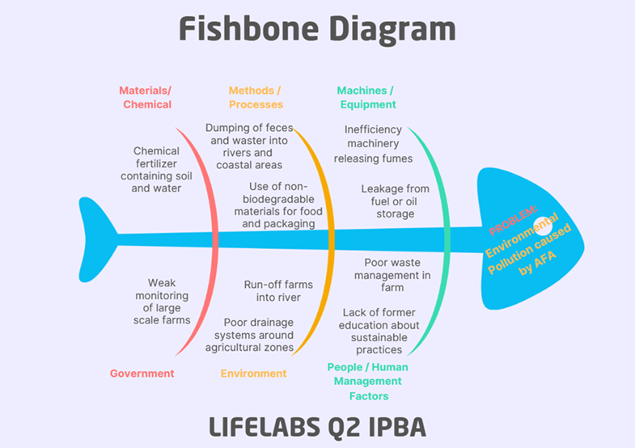

Why the Water Pollution
Pollution hurts not just our environment but all of us, when the air is polluted, and water turns dirty, animals and humans suffering from environmental pollution.
Pollution also affects both Agriculture and Fishery Arts. When the air, soil, and water become polluted, it becomes harder for farmers to grow healthy crops and raise animals. Dirty water and harmful chemicals can damage plants and make the soil less fertile. In Fishery Arts, pollution harms fish and other sea animals because waste and plastics in rivers and oceans make the water unsafe. Fishermen lose their source of food and income, and people can get sick from eating contaminated seafood.
The Philippines has been greatly affected by environmental pollution due to active human activities that’s greatly contaminating our waters, land, and even air. About 40 to 85% of the waste is collected nationwide, while Metro Manila is 85%. With our waters being the main or number one affected/polluted resource, waste that are untreated or uncollected can lead to contaminating major bodies of water and even clogging of the drainage system that results in flooding which is higher and likely to occur during heavy rains.
With urban areas being most likely the “generators of waste”, even our skies and land are not safe either. With air being contaminated with a never-ending/continuous carbon dioxide process, caused by our giant breathing vehicles, that is one of the primary reasons for the greenhouse effect/Global Warming. And our lands are of course not also safe from our mindless choices, with typical sightings of even the smallest of our trash being thrown selfishly on the roads, edge of the woods, sewers, etc rather than in the proper trash bins.
With these long-term effects not being treated sooner, even our fragile blue planet will slowly be devastated by our own doings and struggle to even harbor life. And many diseases and deaths are greatly caused due to the severe pollution, even other countries struggle just like the archipelago country.
Additionally, Philippines is considered to be one of the top global plastic waste generators and is also contributors to plastic pollution in the oceans with estimation of 0.75 million metric tonnes of mismanaged plastic entering the ocean every year, with only challenges on multiplying levels of plastic pollution that have only increased with the COVID 19 pandemic with it also boosting the consumption of single-use plastic.
The only cause that can ultimately lead to the downfall of Humanity, is themselves that are the only main medicine also. If we keep tolerating these kinds of destructive habits/acts, even Nature will not hold back. With us completely acting blind of our surroundings that have been showing signs, our recklessness will just ultimately lead to the next 6th mass extinction, our ongoing demise that some aren’t even seeing coming.
The figure below shows the causes and effect of water pollution using the Fishbone Diagram:
